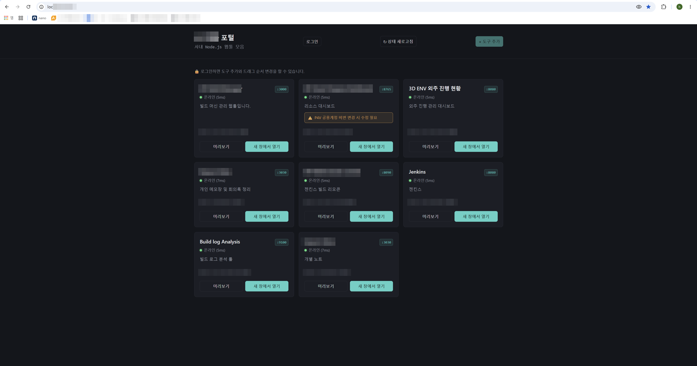

1
Problem · 문제 상황
도구는 많은데, 어디서 접근하는지 아무도 몰랐다
AI 자동화 도구들이 하나씩 만들어지면서 팀 내 사내 도구 수가 늘어났습니다. 빌드 관리 도구, 자산 관리 시스템, 리소스 대시보드, Jenkins 등 각각 다른 IP와 포트로 흩어져 있었고, 새로 합류한 팀원은 어떤 도구가 있는지조차 파악하기 어려웠습니다.
도구별 IP·포트 기억 필요
각 도구마다 다른 주소를 기억하거나 메모해두지 않으면 접근할 수 없었습니다
어떤 도구가 있는지 불명확
새로 합류한 팀원은 어떤 도구가 있는지 파악하기 위해 일일이 물어봐야 했습니다
온라인 여부 확인 불가
도구가 지금 살아있는지 접속해보기 전까지는 알 수 없었습니다
2
Solution · 해결 방법
카드형 통합 포털 — 모든 도구를 한 화면에서
Node.js 기반 웹 포털을 만들어 팀 내 모든 사내 도구를 카드 형태로 통합했습니다. 각 카드는 TCP 연결로 실시간 온라인/오프라인 상태를 감지하고, 응답 시간(ms)까지 표시합니다. 로그인하면 도구를 추가하고 순서를 개인별로 저장할 수 있습니다.
실시간 온라인 상태
TCP 연결로 각 도구의 온라인/오프라인 상태와 응답 시간(ms) 실시간 표시. 30초마다 자동 갱신.
개인별 순서 저장
로그인 후 카드를 드래그앤드롭으로 재정렬하면 계정별로 순서가 저장됩니다. 다른 사람 순서에 영향 없음.
주의사항 표시
도구별 운영 주의사항을 노란색 박스로 표시. 예: "공용 P4V 계정 비밀번호 변경 시 이 머신도 갱신 필요"
화이트리스트 로그인
비밀번호 없이 계정 ID만으로 로그인. 등록된 팀원만 도구 추가·순서 변경 가능.

JSY 웹툴 포털 메인 화면. JSY Build Manager, Asset Progress Dashboard, 3D ENV 외주 진행 현황, Jenkins 등 팀 내 모든 도구가 카드로 통합됩니다. 각 카드에 온라인 상태(●)와 응답 시간이 표시됩니다.
3
Result · 결과
팀 전체 도구 접근이 한 URL로 통일됐다
이제 팀원 누구든 포털 URL 하나만 알면 모든 도구에 접근할 수 있습니다. 새로 합류한 팀원도 어떤 도구가 있는지 포털을 보면 바로 파악됩니다. 도구가 죽어있으면 카드에서 바로 확인할 수 있어 불필요한 접속 시도가 없어졌습니다.
1개
URL로 모든 도구 접근
흩어진 IP·포트 대신 포털 URL 하나로 팀 전체 도구 접근 일원화
실시간
온라인 상태 감지
30초마다 자동 갱신. 도구가 죽으면 즉시 카드에 오프라인 표시
개인화
카드 순서 저장
계정별 드래그앤드롭 순서 저장. 팀원마다 자주 쓰는 도구를 앞에 배치 가능
실배포
사내 운영 중
사내망에 배포되어 팀 전체가 실제로 사용 중
Insight
"도구를 만드는 것만큼 중요한 건 그 도구를 팀이 실제로 쓸 수 있게 만드는 것입니다.
아무리 좋은 도구도 접근하기 불편하면 안 씁니다.
포털은 도구 자체보다 도구들을 연결하는 인프라였습니다."
아무리 좋은 도구도 접근하기 불편하면 안 씁니다.
포털은 도구 자체보다 도구들을 연결하는 인프라였습니다."